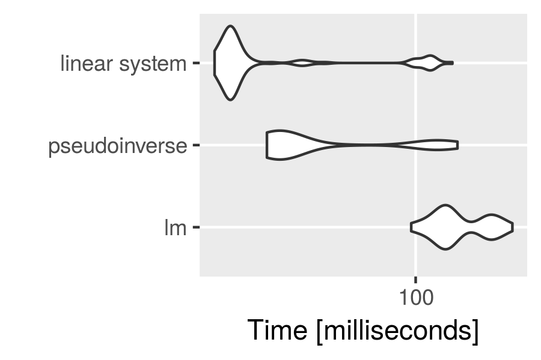

5 ways to measure running time of R code
A reviewer asked me to report detailed running times for all (so many  ) performed computations in one of my papers, and so I spent a Saturday morning figuring out my favorite way to benchmark R code. This is a quick summary of the options I found to be available.
) performed computations in one of my papers, and so I spent a Saturday morning figuring out my favorite way to benchmark R code. This is a quick summary of the options I found to be available.
A quick online search revealed at least three R packages for benchmarking R code (rbenchmark, microbenchmark, and tictoc). Additionally, base R provides at least two methods to measure the running time of R code (Sys.time and system.time). In the following I briefly go through the syntax of using each of the five option, and present my conclusions at the end.
1. Using Sys.time
The run time of a chunk of code can be measured by taking the difference between the time at the start and at the end of the code chunk. Simple yet flexible  .
.
sleep_for_a_minute <- function() { Sys.sleep(60) }
start_time <- Sys.time()
sleep_for_a_minute()
end_time <- Sys.time()
end_time - start_time
# Time difference of 1.000327 mins
2. Library tictoc
The functions tic and toc are used in the same manner for benchmarking as the just demonstrated Sys.time. However tictoc adds a lot more convenience to the whole.
The most recent development1 version of tictoc can be installed from github:
devtools::install_github("jabiru/tictoc")
One can time a single code chunk:
library(tictoc)
tic("sleeping")
print("falling asleep...")
sleep_for_a_minute()
print("...waking up")
toc()
# [1] "falling asleep..."
# [1] "...waking up"
# sleeping: 60.026 sec elapsed
Or nest multiple timers:
tic("total")
tic("data generation")
X <- matrix(rnorm(50000*1000), 50000, 1000)
b <- sample(1:1000, 1000)
y <- runif(1) + X %*% b + rnorm(50000)
toc()
tic("model fitting")
model <- lm(y ~ X)
toc()
toc()
# data generation: 3.792 sec elapsed
# model fitting: 39.278 sec elapsed
# total: 43.071 sec elapsed
3. Using system.time
One can time the evaluation of an R expression using system.time. For example, we can use it to measure the execution time of the function sleep_for_a_minute (defined above) as follows.
system.time({ sleep_for_a_minute() })
# user system elapsed
# 0.004 0.000 60.051
But what exactly are the reported times user, system, and elapsed? 
Well, clearly elapsed is the wall clock time taken to execute the function sleep_for_a_minute, plus some benchmarking code wrapping it (that’s why it took slightly more than a minute to run I guess).
As for user and system times, William Dunlap has posted a great explanation to the r-help mailing list:
“User CPU time” gives the CPU time spent by the current process (i.e., the current R session) and “system CPU time” gives the CPU time spent by the kernel (the operating system) on behalf of the current process. The operating system is used for things like opening files, doing input or output, starting other processes, and looking at the system clock: operations that involve resources that many processes must share. Different operating systems will have different things done by the operating system.

4. Library rbenchmark
The documentation to the function benchmark from the rbenchmark R package describes it as “a simple wrapper around system.time”. However it adds a lot of convenience compared to bare system.time calls. For example it requires just one benchmark call to time multiple replications of multiple expressions. Additionally the returned results are conveniently organized in a data frame.
I installed the development1 version of the rbenchmark package from github:
devtools::install_github("eddelbuettel/rbenchmark")
For example purposes, let’s compare the time required to compute linear regression coefficients using three alternative computational procedures:
-
lm, - the Moore-Penrose pseudoinverse,
- the Moore-Penrose pseudoinverse but without explicit matrix inverses.
library(rbenchmark)
benchmark("lm" = {
X <- matrix(rnorm(1000), 100, 10)
y <- X %*% sample(1:10, 10) + rnorm(100)
b <- lm(y ~ X + 0)$coef
},
"pseudoinverse" = {
X <- matrix(rnorm(1000), 100, 10)
y <- X %*% sample(1:10, 10) + rnorm(100)
b <- solve(t(X) %*% X) %*% t(X) %*% y
},
"linear system" = {
X <- matrix(rnorm(1000), 100, 10)
y <- X %*% sample(1:10, 10) + rnorm(100)
b <- solve(t(X) %*% X, t(X) %*% y)
},
replications = 1000,
columns = c("test", "replications", "elapsed",
"relative", "user.self", "sys.self"))
# test replications elapsed relative user.self sys.self
# 3 linear system 1000 0.167 1.000 0.208 0.240
# 1 lm 1000 0.930 5.569 0.952 0.212
# 2 pseudoinverse 1000 0.240 1.437 0.332 0.612
Here, the meaning of elapsed, user.self, and sys.self is the same as described above in the section about system.time, and relative is simply the time ratio with the fastest test. Interestingly lm is by far the slowest here.
5. Library microbenchmark
The most recent development version of microbenchmark can be installed from github:
devtools::install_github("olafmersmann/microbenchmarkCore")
devtools::install_github("olafmersmann/microbenchmark")
Much like benchmark from the package rbenchmark, the function microbenchmark can be used to compare running times of multiple R code chunks. But it offers a great deal of convenience and additional functionality.
I find that one particularly nice feature of microbenchmark is the ability to automatically check the results of the benchmarked expressions with a user-specified function. This is demonstrated below, where we again compare three methods computing the coefficient vector of a linear model.
library(microbenchmark)
set.seed(2017)
n <- 10000
p <- 100
X <- matrix(rnorm(n*p), n, p)
y <- X %*% rnorm(p) + rnorm(100)
check_for_equal_coefs <- function(values) {
tol <- 1e-12
max_error <- max(c(abs(values[[1]] - values[[2]]),
abs(values[[2]] - values[[3]]),
abs(values[[1]] - values[[3]])))
max_error < tol
}
mbm <- microbenchmark("lm" = { b <- lm(y ~ X + 0)$coef },
"pseudoinverse" = {
b <- solve(t(X) %*% X) %*% t(X) %*% y
},
"linear system" = {
b <- solve(t(X) %*% X, t(X) %*% y)
},
check = check_for_equal_coefs)
mbm
# Unit: milliseconds
# expr min lq mean median uq max neval cld
# lm 96.12717 124.43298 150.72674 135.12729 188.32154 236.4910 100 c
# pseudoinverse 26.61816 28.81151 53.32246 30.69587 80.61303 145.0489 100 b
# linear system 16.70331 18.58778 35.14599 19.48467 22.69537 138.6660 100 a
We used the function argument check to check for equality (up to a maximal error of 1e-12) of the results returned by the three methods. If the results weren’t equal, microbenchmark would return an error message.
Another great feature is the integration with ggplot2 for plotting microbenchmark results.
library(ggplot2)
autoplot(mbm)

Conclusion
The given demonstration of the different benchmarking functions is surely not exhaustive. Nevertheless I made some conclusions for my personal benchmarking needs:
- The
Sys.timeapproach as well as thetictocpackage can be used for timing (potentially nested) steps of a complicated algorithm (that’s often my use case). However,tictocis more convenient, and (most importantly) foolproof. - We saw that
microbenchmarkreturns other types of measurements thanbenchmark, and I think that in most situations themicrobenchmarkmeasurements are of a higher practical significance .
. - To my knowledge
microbenchmarkis the only benchmarking package that has visualizations built in .
.
For these reasons I will go with microbenchmark and tictoc.